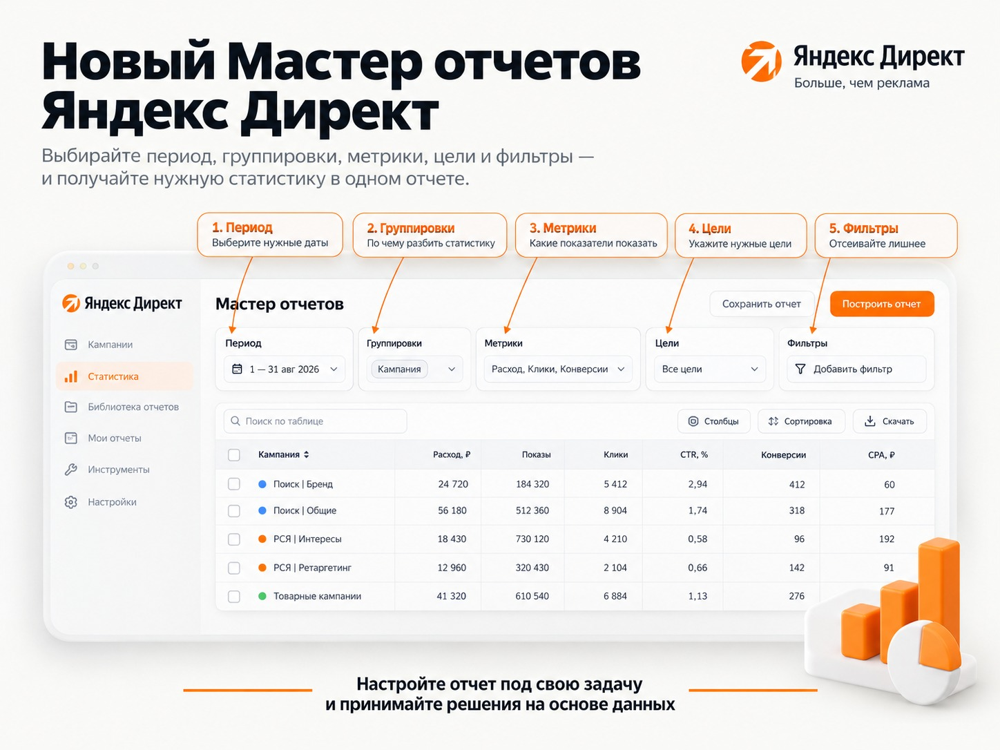
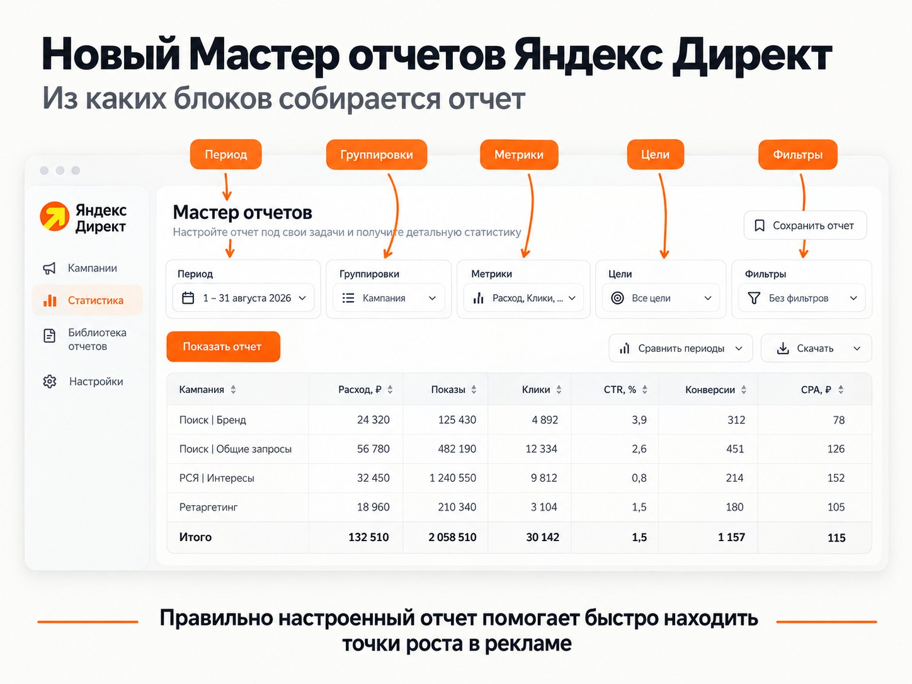
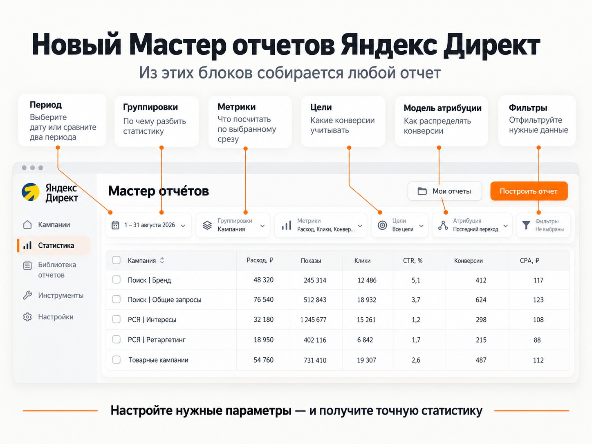

Блог о платном трафике
Мастер отчетов в Яндекс Директ: как смотреть статистику и работать с новым интерфейсом
Мастер отчетов Яндекс Директа - основной инструмент для детального анализа рекламы. Здесь можно посмотреть расходы, показы, клики, конверсии и CPA, разобрать результаты по кампаниям, объявлениям, поисковым запросам, площадкам, аудиториям, регионам, товарам и другим срезам.
В 2026 году инструмент серьезно обновился. Новый Мастер отчетов вышел из беты в марте, а с 22 июня стал основным интерфейсом аналитики в Директе. Старые ссылки на специальные отчеты теперь ведут в соответствующие разделы новой Библиотеки отчетов.
Я работаю с отчетами Директа постоянно, и новый интерфейс действительно дает несколько полезных возможностей, которые легко пропустить. Особенно интересны фильтры, работа с площадками РСЯ, поисковыми запросами и отдельными целями.
Где посмотреть статистику Яндекс Директа
Самый прямой путь:
Статистика → Мастер отчетов.
Можно открыть статистику и непосредственно из списка кампаний. Если перейти из конкретной кампании, Директ сразу применит соответствующий фильтр. Для разных типов кампаний также открываются подходящие готовые отчеты из Библиотеки.
Если нужно просто понять, сколько потрачено денег и сколько получено заявок, иногда достаточно таблицы кампаний. Мастер отчетов нужен, когда появляется следующий вопрос: почему одна кампания работает лучше другой, откуда пришли заявки, какие запросы съедают бюджет, какие площадки дают мусорный трафик и какие объявления действительно приносят результат.
Как устроен новый Мастер отчетов

Логика отчета строится вокруг нескольких основных элементов:
- период;
- группировки;
- метрики;
- цели;
- модель атрибуции;
- фильтры.
Группировка отвечает на вопрос "по чему разбить статистику". Метрика отвечает на вопрос "что именно по этому срезу посчитать".
Примеры группировок:
Кампания - результат каждой кампании.
Название площадки - статистика сайтов и приложений РСЯ.
Поисковый запрос - реальные запросы пользователей.
Тип условия показа - ключевые фразы, автотаргетинг и другие условия.
Регион - география трафика.
Объявление - эффективность отдельных объявлений.
Изображение - результат разных креативов.
К этим группировкам можно добавить расходы, показы, клики, CTR, конверсии, CR, CPA, доход, ДРР, ROI и другие показатели.
В новом интерфейсе группировки и метрики распределены по логическим блокам, работает поиск по названиям и синонимам, а отчет автоматически пересчитывается после изменения настроек. Столбцы можно перемещать, закреплять, сортировать и фильтровать непосредственно в таблице.
Для бизнеса я бы в большинстве случаев начинал не с CTR и средней цены клика, а с расхода, конверсий и CPA. Если подключена нормальная сквозная аналитика, дальше добавляются доход, прибыль и ДРР.
Подробнее - в статье «Конверсия в Яндекс Директ: что это и как ее считать».
Библиотека отчетов
Одно из главных отличий нового интерфейса - Библиотека отчетов.
Это набор уже настроенных отчетов под конкретные задачи. В них заранее выбраны группировки, метрики и фильтры. Отчет можно открыть как есть или изменить под себя, а потом сохранить свою версию.
Для большинства рекламодателей полезнее всего начать с нескольких отчетов:
- Поисковые запросы;
- Площадки;
- отчеты по типам кампаний;
- отчеты по товарам и категориям для ecommerce;
- отчет по регионам;
- отчет по недействительному трафику.
Последний появился в 2026 году. Теперь количество кликов и конверсий, которые отфильтровала антифрод-система Яндекса, можно получить через специальный отчет Библиотеки.
Как смотреть поисковые запросы
Отчет «Поисковые запросы» я считаю одним из обязательных для регулярной работы с поисковой рекламой.
Он находится в:
Статистика → Библиотека отчетов → Оптимизация размещения → Поисковые запросы.
Отчет показывает реальные формулировки, по которым пользователи видели рекламу. Здесь доступны, среди прочего:
- поисковый запрос;
- тип условия показа;
- ключевая фраза;
- тип соответствия;
- категория запроса;
- упоминание бренда.
Не начинайте с просмотра тысяч строк
Если запросов много, листать отчет подряд практически бессмысленно.
Я предпочитаю сначала смотреть более крупные срезы.
Первый - Тип условия показа. Так можно сравнить, сколько результата дали ключевые фразы и сколько автотаргетинг.
Если проблема именно в автотаргетинге, дальше имеет смысл смотреть категории запросов и реальные формулировки.
Подробнее - в статье «Как отключить автотаргетинг в Яндекс Директе».
Для ключевых фраз полезен Тип соответствия. Сейчас Яндекс разделяет пословное и семантическое соответствие. Семантическое может охватывать синонимы, переформулировки, более конкретные запросы и некоторые другие варианты.
Если ключ постоянно приводит нерелевантные запросы, можно уточнить его операторами. Если фраза, наоборот, слишком сильно ограничена и теряет нормальный спрос, ограничения иногда стоит ослабить.
Подробнее - в статье «Операторы Яндекс Директ».
Минус-фразы теперь можно добавлять прямо из отчета
В новом Мастере отчетов можно выделить ненужные поисковые запросы и сразу отправить их в минус-фразы.
Для этого используется режим массовых действий. Директ позволяет выбрать уровень добавления ограничения, отредактировать фразы и использовать операторы.
Это заметно удобнее старой схемы с постоянным копированием запросов между отчетом и настройками кампании.
Подробнее - в статье «Минус-фразы для Яндекс Директа».
Хорошие запросы можно превратить в ключевые фразы
Обратный сценарий тоже появился в новом интерфейсе.
Если реальный запрос дает хороший результат, его можно выбрать и нажать «Добавить в ключевые фразы».
При ручной стратегии «Максимум кликов с ручными ставками» Директ позволяет сразу указать ставку.
То есть отчет стал инструментом не только анализа, но и непосредственной оптимизации кампании.
Учитывайте ограничения по сроку хранения
Подробные данные по поисковым запросам доступны только за последние 180 дней. Для семантического соответствия Яндекс отдельно указывает возможность проверки корректности подбора только за последние 60 дней.
Поэтому запросы лучше проверять регулярно, а не пытаться раз в год восстановить всю историю кампании.
Также проверяйте активные фильтры отчета. Если установлен фильтр по кликам, часть запросов без кликов вы не увидите. Это особенно важно, если задача - исследовать именно весь объем показов, а не только полученные переходы.
Как анализировать площадки РСЯ

Для РСЯ есть готовый отчет «Площадки».
Он показывает сайты, приложения и другие площадки, где размещалась реклама. В готовой версии уже используются основные группировки и показатели: название площадки, кампания, расход, показы, клики, конверсии, CR и CPA.
Но в новом Мастере мне особенно нравятся фильтры по названию.
Как быстро найти определенный тип площадок
В настройках фильтров можно использовать текстовое условие «Содержит».
Например, можно добавить:
Площадки → Название площадки → Содержит → com.
И получить площадки, в названии которых присутствует этот фрагмент.
Аналогично можно проверять:
- dsp;
- game;
- другие характерные части названий площадок.
Это намного быстрее, чем искать каждую площадку вручную или собирать ее через сторонние инструменты.
Само наличие com., game или другого фрагмента не означает, что площадка плохая. После фильтрации нужно смотреть ее фактический расход, количество конверсий, CPA, качество заявок и объем накопленной статистики.
Площадки можно запрещать прямо из отчета
В новом интерфейсе появилась возможность управлять показами РСЯ непосредственно из статистики.
Добавляете группировку «Название площадки», включаете режим массовых действий, отмечаете нужные строки и выбираете «Запретить». В одном отчете можно работать сразу с несколькими кампаниями.
На практике текстовые фильтры хорошо ускоряют предварительный отбор. Но я бы не рекомендовал запрещать площадки только потому, что их название похоже на приложение или DSP. Сначала статистика, потом решение.
Для больших списков в ЕПК бывает удобнее отфильтровать данные, скачать отчет и работать со списком дальше массово. Новый Мастер поддерживает XLSX и CSV.
Анализ объявлений и креативов
Раньше работа с креативами в общей статистике была менее удобной.
В 2026 году Яндекс добавил группировки:
- Изображение;
- Название изображения;
- ID видео;
- Превью видео.
Их можно сочетать с заголовком и текстом объявления и смотреть, какие комбинации действительно работают лучше.
Это особенно полезно в кампаниях с большим количеством креативов, где по общей статистике кампании невозможно понять, какой именно элемент приносит результат.
В товарных и каталожных кампаниях можно дополнительно анализировать название товара или каталога, производителя, категорию, заголовки, тексты и ссылки.
Древовидные таблицы
Еще одно заметное обновление 2026 года - древовидный вид таблиц.
Можно выстроить иерархию, например:
Кампания → группа → объявление
или
Кампания → регион → объявление
и раскрывать нужные уровни внутри одного отчета.
Это особенно удобно в больших аккаунтах. Вместо нескольких отдельных таблиц можно оставить один отчет и постепенно проваливаться в данные сверху вниз. Порядок группировок определяет структуру дерева.
Для небольшого рекламного кабинета это не революция. Для аккаунта с десятками кампаний и большим количеством групп - уже полезный рабочий инструмент.
Сравнение периодов и графики
Статистика Яндекс Директа редко что-то говорит без сравнения.
Если CPA вырос с 1500 до 2200 рублей, сама цифра еще ничего не объясняет. Нужно понять, когда началось изменение, что произошло с расходом, кликами, CR и другими показателями.
Новый Мастер позволяет сравнивать два периода и визуализировать динамику на графиках. В отличие от старого интерфейса сравниваемые периоды могут даже пересекаться.
В марте 2026 года Яндекс также расширил возможности графиков. Теперь между таблицей и визуализацией можно переключаться внутри одного отчета и выбирать показатели для отображения.
Я использую графики скорее для поиска момента изменения показателей. Причину после этого все равно приходится искать в более подробных срезах.
Цели и CPA: здесь легко неправильно прочитать статистику

Один из самых спорных моментов Мастера отчетов - работа с несколькими целями.
В новом интерфейсе можно выбрать сразу несколько целей и решить, как показывать статистику:
- суммарно по всем выбранным целям;
- отдельно по каждой цели;
- одновременно в обоих вариантах.
И здесь легко получить цифру, которую человек интерпретирует неправильно.
Пример с подписками в Telegram и МАКС
Для некоторых клиентов мы используем лендинг, на котором человеку предлагаются две кнопки:
Telegram и МАКС.
Пользователь после клика по рекламе сам выбирает удобный мессенджер.
Для такой связки можно настроить две отдельные цели и посмотреть их в Мастере отчетов.
В одном из моих примеров интерфейс показывал примерно:
- подписка в МАКС - 278 ₽;
- подписка в Telegram - 551 ₽.
Если посмотреть только на эти цифры, легко решить, что Telegram приносит очень дорогих подписчиков.
Но рекламные расходы до момента выбора мессенджера у нас общие.
Когда CPA выводится отдельно по каждой цели, Мастер фактически отвечает на вопрос: сколько общего рекламного расхода приходится на одно достижение этой конкретной цели.
Это не то же самое, что реальная стоимость отдельного источника трафика.
Например, если реклама потратила одну общую сумму, а люди после одного и того же лендинга разошлись между двумя мессенджерами, нельзя считать, будто весь рекламный бюджет отдельно был потрачен на Telegram, а потом этот же бюджет отдельно был потрачен на МАКС.
Как считать общий CPA
Для оценки самой рекламной связки логичнее сложить подписчиков двух мессенджеров:
CPA = общий расход / (подписки Telegram + подписки МАКС)
В моем примере средняя стоимость одного полученного подписчика после такого расчета составляет около 185 ₽.
Именно эта цифра лучше отвечает на вопрос, сколько мы фактически платим за одного человека, который после рекламы подписался в один из двух предложенных каналов.
Можно ли отдельно посчитать стоимость подписчика Telegram и МАКС
Точно разделить общий рекламный расход между двумя кнопками после одного лендинга нельзя, если до момента выбора у пользователей был общий рекламный путь.
Можно сделать оценочную модель.
Например, взять средний CPA 185 ₽ и скорректировать его с учетом того, насколько чаще люди выбирают один мессенджер относительно другого. В моем примере такая оценка дает примерно:
- Telegram - 366 ₽;
- МАКС - 93 ₽.
Я воспринимаю эти цифры именно как ориентир, а не как фактическую стоимость двух независимых рекламных каналов.
Если нужна действительно точная экономика каждого направления, придется разводить трафик раньше и отдельно учитывать расходы до подписки.
Главный вывод здесь простой: перед тем как делать вывод по CPA из Мастера отчетов, проверьте, что именно находится в числителе и знаменателе конкретной метрики.
Какие показатели смотреть владельцу бизнеса
Если задача - быстро посмотреть статистику Яндекс Директа без глубокого погружения в технические детали, я бы оставил небольшой набор:
Расход - сколько потрачено.
Клики - сколько переходов получено.
Конверсии - сколько целевых действий зафиксировано.
CR - какая доля трафика конвертируется.
CPA - сколько стоит конверсия.
Доход - сколько дохода передано в аналитику.
ДРР / ROI - насколько оправданы расходы.
CTR и CPC тоже полезны, но сами по себе они не показывают эффективность бизнеса.
Кампания может получать дешевые клики и прекрасный CTR, но приводить нецелевые заявки. Другой источник может иметь более дорогой трафик, но приносить реальные продажи.
Подробнее - в статье «Аудит Яндекс Директ: что проверить и как найти проблемы в рекламе».
Что еще появилось в новом Мастере отчетов
За 2025-2026 годы инструмент получил достаточно много функций, поэтому кратко соберу самые полезные изменения:
- Библиотека готовых отчетов;
- автоматическое обновление отчета после изменения настроек;
- сохранение собственных отчетов в разделе «Мои отчеты»;
- возможность делиться сложными отчетами по ссылке;
- наследование фильтров при переходе между отчетами;
- управление площадками РСЯ из отчета;
- добавление минус-фраз из статистики;
- добавление поисковых запросов в ключевые фразы;
- выгрузка XLSX и CSV;
- отдельное отображение статистики по нескольким целям;
- настройка порядка целей;
- группировки по изображениям и видео;
- расширенная аналитика регионов;
- древовидные таблицы;
- отчет по недействительному трафику;
- новые графики.
Также в Директе появился ИИ-помощник. Ему можно сформулировать аналитическую задачу обычным текстом, после чего он способен построить отчет, показать сводные данные и дать ссылку на результат.
Для меня это пока скорее дополнительный способ быстрее собрать нужный срез. Проверять сами цифры и правильно интерпретировать их все равно должен человек.
Главное правило работы со статистикой Яндекс Директа
Мастер отчетов сам по себе не отвечает на вопрос, хорошая у вас реклама или плохая.
Он дает данные.
Одна площадка может выглядеть дорогой из-за трех кликов. У запроса может быть высокий CPA из-за одной единственной конверсии. У отдельной цели может отображаться странная стоимость, потому что рекламный расход общий для нескольких вариантов действий.
Поэтому нормальный анализ обычно идет сверху вниз:
1. Смотрим общие расходы, конверсии и CPA.
2. Находим кампании или периоды, где есть отклонение.
3. Проваливаемся в условия показа, запросы, площадки, аудитории, объявления или регионы.
4. Используем фильтры, чтобы сузить выборку.
5. Проверяем, достаточно ли данных для вывода.
6. Только после этого меняем кампанию.
В таком режиме новый Мастер отчетов стал заметно удобнее старого. Он уже не просто показывает статистику Яндекс Директа, а позволяет прямо из отчета выполнять часть регулярной работы по оптимизации рекламы.